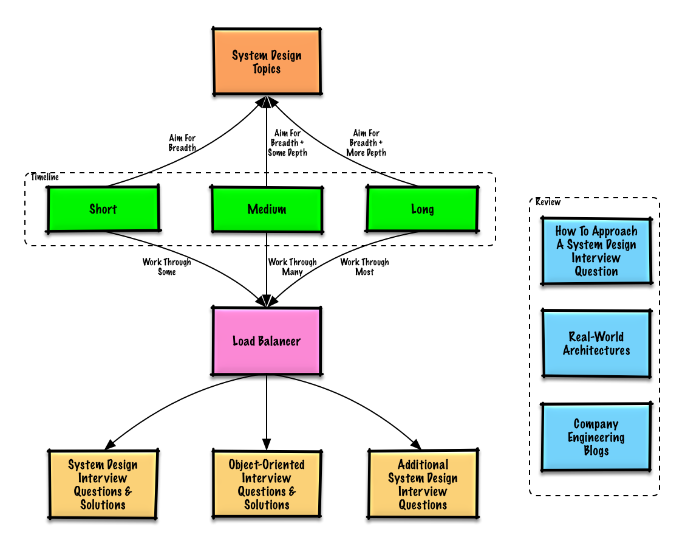
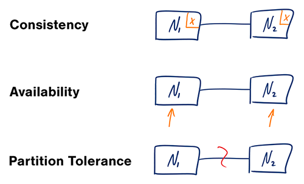
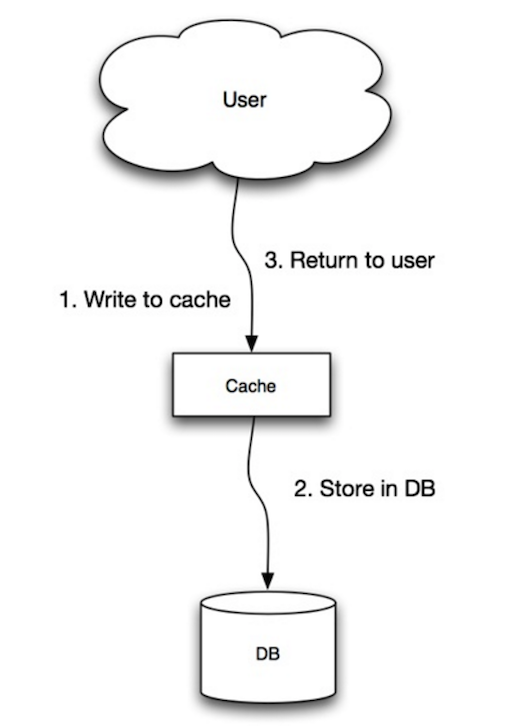
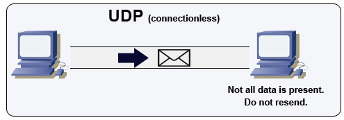

English ∙ 日本語 ∙ 简体中文 ∙ 繁體中文 ∙ العَرَبِيَّة ∙ বাংলা ∙ Português do Brasil ∙ Deutsch ∙ ελληνικά ∙ עברית ∙ Italiano ∙ 한국어 ∙ فارسی ∙ Polski ∙ русский язык ∙ Español ∙ ภาษาไทย ∙ Türkçe ∙ tiếng Việt ∙ Français | Add Translation
Bu kaynağın çevirisine yardım edebirsiniz!
Sistem Tasarım Rehberi¶

Amaç¶
Büyük ölçekli sistemler için sistem tasarımını öğrenmek.
Sistem tasarımı mülakatlarına hazırlanmak.
Büyük sistemlerin nasıl tasarlacağını öğrenin¶
Ölçeklenebilir sistemlerin nasıl tasarlanacağını öğrenmek, daha iyi bir mühendis olmanıza yardımcı olacaktır.
Sistem tasarımı, çok geniş bir konudur. İnternette sistem tasarım ilkelerine ilişkin sayısız kaynak bulunmaktadır. **
Bu repo, ölçeklenebilir sistemlerin nasıl oluşturulacağını öğrenmenize yardımcı olabilecek düzenli bir kaynak koleksiyonudur.
Açık kaynak topluluğundan bilgi edinin¶
Bu, sürekli güncellenen açık kaynak projesinin ilk sürümüdür.
Katkıda bulunabilirsiniz!
Sistem tasarımı görüşmelerine hazırlanın¶
Pek çok teknoloji şirketinde, görüşmeleri kodlamanın yanı sıra sistem tasarımı da teknik görüşme sürecinde gerekli bir adımdır.
Sistem tasarımıyla ilgili yaygın mülakat sorularını pratik yapın ve örnek çözümler ile yanıtlarınızı karşılaştırın: tartışmalar, kodlar ve diyagramlar.
Mülakata hazırlık için diğer konular:
- Çalışma rehberi
- Sistem tasarımı mülakat sorusu nasıl ele alınır
- Sistem tasarımı mülakat soruları ve çözümleri
- Nesne yönelimli tasarım mülakat soruları ve çözümleri
- Diğer sistem tasarımı mülakat soruları
Anki bilgi kartları¶

Anki bilgi kartlarını temel sistem tasarımı kavramlarını ezberlemenize yardımcı olmak için kullanabilirsiniz.
- Sistem tasarımı kartları
- Sistem tasarımı alıştırma kartları
- Nesneye yönelik tasarım alıştırma kartları
Her zaman ve her yerde kullanılabilir.
Kod Kaynakları: Etkileşimli Kodlama Yarışmaları¶
Kodlama Mülakatlarına hazırlanmak için kaynak mı arıyorsunuz?

Lütfen ek bilgi kartlarını içeren Etkileşimli Kodlama Yarışmaları reposuna göz atın:
Katkı¶
Topluluktan öğrenin.
Yardım etmek için değişiklik gönderme talebi(pull request) göndermekten çekinmeyin:
- Hataları düzeltmek
- Bölümleri geliştirmek
- Yeni bölüm eklemek
- Çeviri Yardımı
Hala geliştirilmesi gereken bazı içerikler, Geliştirme aşamasında bölümünde bulunmaktadır.
Lütfen katkı kurallarını inceleyin.
Sistem tasarımı konuları dizini¶
Avantajlar ve dezavantajlar da dahil olmak üzere çeşitli sistem tasarımı konularının özeti. Her şeyin bir karşılığı vardır.. (Ek çeviri notu: Karşılaştırma sonucunda bir şeyden feragat etmek gerektiği vurgulanmaktadır.)
Her bölüm, ek kaynaklara bağlantılar içerir.

- Sistem Tasarım Rehberi
- Amaç
- Anki bilgi kartları
- Katkı
- Sistem tasarımı konuları dizini
- Çalışma rehberi
- Sistem tasarımı mülakat sorusu nasıl ele alınır?
- Sistem tasarımı mülakat soruları ve çözümleri
- Pastebin.com(veya Bit.ly) tasarlayın
- Twitter zaman çizelgesi ve arama(veya Facebook haber akışı ve arama) tasarlayın
- Bir web tarayıcısı tasarlayın
- Mint.com tasarlayın
- Sosyal ağ için veri yapılarını tasarlayın
- Arama motorları için bir anahtar/değer(key-value) deposu tasarlayın
- Amazon'un satış sıralamasını kategori özellikleri aracılığıyla tasarlayın
- AWS'de milyon kullanıcılı bir sistem tasarlayın
- Nesne yönelimli tasarım mülakat soruları ve çözümleri
- Sistem tasarımı konuları: buradan başlayın
- Performans veya ölçeklenebilirlik
- Gecikme veya verim
- Kullanılabilirlik veya tutarlılık
- Tutarlılık modelleri
- Kullanılabilirlik modları
- Alan Adı Sistemi (DNS)
- İçerik Dağıtım Ağı (CDN)
- Yük dengeleyici (Load balancer)
- Ters proxy (web sunucusu)
- Uygulama katmanı
- Veritabanı
- İlişkisel veritabanı yönetim sistemi (RDBMS)
- Master-slave çoğaltma
- Master-master çoğaltma
- Federasyon
- Parçalama
- Kaynak(lar) ve ek okuma: parçalama
- Denormalizasyon
- SQL ayarlama (SQL tuning)
- NoSQL
- Anahtar-değer deposu
- Kaynak(lar) ve ek okuma
- Belge deposu
- Kaynak(lar) ve ek okuma: belge deposu
- Geniş sütun deposu
- Grafik veritabanı
- Kaynak(lar) ve ek okuma: NoSQL
- SQL veya NoSQL
- Önbellek
- İstemci önbelleği
- CDN önbelleği
- Web sunucusu önbelleği
- Veritabanı önbelleği
- Uygulama önbelleği
- Veritabanı sorgu düzeyinde önbellekleme
- Nesne düzeyinde önbellekleme
- Önbellek ne zaman güncellenmeli
- Cache-aside
- Üzerine yazma (write-through)
- Geri yazma (write-behind)
- Önbelleği önceden yenileme (refresh-ahead)
- Dezavantaj(lar): önbellek
- Kaynak(lar) ve ek okuma
- Asenkronizm
- İletişim
- Köprü metni aktarım protokolü (HTTP)
- Kaynak(lar) ve ek okuma: HTTP
- İletim kontrol protokolü (TCP)
- Kullanıcı datagram protokolü (UDP)
- Kaynak(lar) ve ek okuma: TCP ve UDP
- Uzaktan yordam çağrısı (RPC)
- Dezavantajları: RPC
- Temsili Durum Transferi (REST)
- Dezavantaj(lar): REST
- RPC ve REST karşılaştırması
- Kaynak(lar) ve ek okuma: REST ve RPC
- Güvenlik
- Ek
- İkinin kuvveti tablosu
- Kaynak(lar) ve ek okuma
- Her programcının bilmesi gereken gecikme sayıları
- Gecikme numarası görselleştirmesi
- Kaynak(lar) ve ek okuma
- Diğer sistem tasarımı mülakat soruları
- Gerçek dünya mimarileri
- Şirketlerin sistem mimarileri
- Şirketlerin mühendislik blogları
- Kaynak(lar) ve ek okuma
- Geliştirme aşamasında
- Katkıda bulunanlar
- İletişim
- Lisans
Çalışma rehberi¶
Mülakat zaman çizelgenize (kısa, orta, uzun) göre önerilen konuları gözden geçirin.

**S: Mülakatlar için buradaki her şeyi bilmem gerekiyor mu? **
**C: Hayır, mülakata hazırlanmak için buradaki her şeyi bilmenize gerek yok. **
Bir mülakatta size ne sorulacağı aşağıdaki faktörlere bağlıdır:
- Tecrübeniz
- Teknik geçmişiniz
- Görüşme yapacağınız pozisyon(lar)
- Görüşme yapacağınız firma(lar)
- Şans
Daha fazla deneyime sahip adayların genellikle sistem tasarımı konusunda daha fazla bilgiye sahip olmaları beklenir. Yazılım mimarlarından veya ekip liderlerden diğer adaylara göre daha fazlasını bilmeleri beklenebilir. En iyi teknoloji şirketleri, genellikle bir veya daha fazla sistem tasarımı mülakatı yapmaktadır.
Geniş bir perspektifle başlayın ve daha derine inmek için birkaç alana odaklanın. Önemli bazı sistem tasarım konuları hakkında biraz bilgi sahibi olmak faydalı olacaktır. Aşağıdaki rehberi, zaman çizelgenize, deneyiminize, hangi pozisyonlar için hangi şirketlerle mülakat yapacağınıza göre ayarlayın.
- Kısa zaman çizelgesi - Sistem tasarımı konularında geniş bir bakış açısı hedefleyin. Birkaç mülakat sorusu çözerek pratiğinizi artırın.
- Orta zaman çizelgesi - Sistem tasarımı konularında geniş bir bakış açısı ve biraz derinlik elde etmeyi hedefleyin. Birçok mülakat sorusunu çözerek pratiğinizi artırın.
- Uzun zaman çizelgesi - Sistem tasarımı konularında geniş bir bakış açısı ve daha fazla derinlik elde etmeyi hedefleyin. Mülakat sorularının çoğunu çözerek pratiğinizi artırın.
| Kısa | Orta | Uzun | |
|---|---|---|---|
| Sistem tasarımı konuları dizinini okuyarak geniş bir fikir edinin |  |
|
|
| Mülakat yapacağınız şirketlerin bazı mühendislik blog yazılarını okuyun | |
|
|
| Bazı Gerçek dünya mimarileri başlıklarını inceleyin | |
|
|
| Sistem tasarımı mülakat sorusu nasıl ele alınır başlığını inceleyin | |
|
|
| Sistem tasarımı mülakat soruları ve çözümlerine çalışın | Birkaç | Birçok | Çoğu |
| Nesne yönelimli tasarım mülakat soruları ve cevaplarıne çalışın | Birkaç | Birçok | Çoğu |
| Diğer sistem tasarımı mülakat sorularını gözden geçirin | Birkaç | Birçok | Çoğu |
Sistem tasarımı mülakat sorusu nasıl ele alınır?¶
Sistem tasarımı mülakatı açık uçlu bir görüşmedir. Konuşmayı sizin yönlendirmeniz beklenir.
Tartışmayı yönlendirmek için aşağıdaki adımları kullanabilirsiniz. Bu süreci sağlamlaştırmak için lütfen aşağıdaki adımları kullanarak Sistem tasarımı mülakat soruları ve çözümleri bölümüne bakınız.
Adım 1: Kullanım senaryolarını, kısıtlamaları ve varsayımları açıklayın¶
İhtiyacınız olan her şeyi bir araya toplayın ve soruna bakın. Kullanım senaryolarını ve kısıtlamaları net bir şekilde anlayabilmek için sorular sormaya devam edin. Varsayımları tartışın.
- Kim kullanacak?
- Nasıl kullanacaklar?
- Kaç kullanıcı var?
- Sistemin işlevi nedir?
- Sistemin girişi ve çıkışı nelerdir?
- Ne kadar veri işlenmek isteniyor?
- Saniyede kaç isteğin işleme alınması bekleniyor?
- İstenilen okuma-yazma oranı nedir?
Adım 2: Üst düzey bir tasarım oluşturun¶
Üst düzey bir tasarımın ana hatlarını çizmek için tüm önemli bileşenleri kullanın.
- Ana bileşenleri ve bağlantıları çizin
- Fikrinizi gerekçelendirin
Adım 3: Temel bileşenleri tasarlayın¶
Her bir temel bileşenin ayrıntılı ve derinlemesine analizini gerçekleştirin. Örneğin, sizden URL kısaltma hizmeti tasarlamanız istendiyse, bunları tartışın:
- Tam URL'nin hash değerini oluşturmak ve saklamak
- Hash edilmiş URL'yi tam bir URL'ye çevirmek
- Veritabanı araması
- API ve nesne yönelimli tasarım
Adım 4: Tasarımı genişletin¶
Sistemin performansını etkileyen durumları ve sınırlamaları belirleyin ve ele alın. Örneğin, genişletme sorununu(address scalability issue) tanımlamak için aşağıdakilere ihtiyacınız var mı?
- Yük dengeleme (Load balancer)
- Yatay genişleme (Horizontal scaling)
- Önbellek (Caching)
- Veritabanı parçalama (Database sharding)
Olası çözümleri ve maliyetleri tartışın. Her şeyin bir karşılığı vardır. (Ek çeviri notu: Karşılaştırma sonucunda bir şeyden feragat etmek gerektiği vurgulanmaktadır.) Ölçeklenebilir sistemler için tasarım ilkelerini kullanarak tasarımdaki performans veya kapasite kısıtlamalarını belirleyin.
Tahmini hesaplama¶
Elle bazı tahminler yapmanız istenebilir. Ek olarak aşağıdaki kaynaklara bakabilirsiniz:
- Use back of the envelope calculations
- 2'nin kuvvet tablosu
- Her programcının bilmesi gereken gecikme sayıları
Kaynak(lar) ve ek okuma¶
Daha iyi bir fikir edinmek için aşağıdaki bağlantılara göz atın:
- How to ace a systems design interview
- The system design interview
- Intro to Architecture and Systems Design Interviews
- System design template
Sistem tasarımı mülakat soruları ve çözümleri¶
Genel sistem tasarımı mülakat soruları ve çözümler, kodlar ve diyagramlar.
Çözümler,
solutions/klasöründe bulunmaktadır.
| Soru | |
|---|---|
| Pastebin.com(veya Bit.ly) tasarlayın | Çözüm |
| Twitter zaman çizelgesi ve arama(veya Facebook haber akışı ve arama) tasarlayın | Çözüm |
| Bir web tarayıcısı tasarlayın | Çözüm |
| Mint.com tasarlayın | Çözüm |
| Sosyal ağ için veri yapılarını tasarlayın | Çözüm |
| Arama motorları için bir anahtar/değer(key-value) deposu tasarlayın | Çözüm |
| Amazon'un satış sıralamasını kategori özellikleri aracılığıyla tasarlayın | Çözüm |
| AWS'de milyon kullanıcılı bir sistem tasarlayın | Çözüm |
| Sistem tasarımı sorusu ekleyin | Katkı |
Pastebin.com(veya Bit.ly) tasarlayın¶
Alıştırma ve çözümü görüntüleyin

Twitter zaman çizelgesi ve arama(veya Facebook haber akışı ve arama) tasarlayın¶
Alıştırma ve çözümü görüntüleyin
Bir web tarayıcısı tasarlayın¶
Alıştırma ve çözümü görüntüleyin

Mint.com tasarlayın¶
Alıştırma ve çözümü görüntüleyin

Sosyal ağ için veri yapılarını tasarlayın¶
Alıştırma ve çözümü görüntüleyin

Arama motorları için bir anahtar/değer(key-value) deposu tasarlayın¶
Alıştırma ve çözümü görüntüleyin

Amazon'un satış sıralamasını kategori özellikleri aracılığıyla tasarlayın¶
Alıştırma ve çözümü görüntüleyin

AWS'de milyon kullanıcılı bir sistem tasarlayın¶
Alıştırma ve çözümü görüntüleyin
Nesne yönelimli tasarım mülakat soruları ve çözümleri¶
Genel nesne yönelimli tasarım mülakat soruları ve çözümler, kodlar ve diyagramlar.
Çözümler,
solutions/klasöründe bulunmaktadır.Not: Bu bölüm halen geliştirilme aşamasındadır
| Soru | |
|---|---|
| Karma tablo(Hash map) tasarlayın | Çözüm |
| LRU önbelleğini tasarlayın | Çözüm |
| Çağrı merkezi tasarlayın | Çözüm |
| Kart destesi tasarlayın | Çözüm |
| Park yeri tasarlayın | Çözüm |
| Sohbet hizmeti tasarlayın | Çözüm |
| Dairesel dizi(circular array) tasarlayın | Katkı |
| Nesne yönelimli tasarım sorusu ekleyin | Katkı |
Sistem tasarımı konuları: buradan başlayın¶
Sistem tasarımına aşina değil misiniz?
Öncelikle; genel ilkeler, bunların ne olduğu, nasıl kullanılacağı, artıları ve eksileri hakkında temel bir anlayışa sahip olmanız gerekir.
1. Adım: Ölçeklenebilirlik video dersini inceleyin¶
Scalability Lecture at Harvard
- İşlenen konular:
- Dikey ölçeklendirme(Vertical scaling)
- Yatay ölçeklendirme(Horizontal scaling)
- Önbellek(Caching)
- Yük dengeleme(Load balancing)
- Veritabanı çoğaltma(Database replication)
- Veritabanı bölümü(Database partitioning)
2. Adım: Ölçeklenebilirlik makalesini inceleyin¶
- İşlenen konular:
Sonraki adımlar¶
Daha sonra, üst düzey karşılaştırmalara bakacağız:
- Performans veya Ölçeklenebilirlik
- Gecikme veya Verim
- Kullanılabilirlik veya Tutarlılık
Her şeyin bir karşılığı olduğunu unutmayın. (Ek çeviri notu: Karşılaştırma sonucunda bir şeyden feragat etmek gerektiği vurgulanmaktadır.)
Daha sonra alan adı sistemi(DNS), içerik dağıtım ağları(CDNs) ve yük dengeleyiciler(load balancers) gibi daha spesifik konuları inceleyeceğiz.
Performans veya ölçeklenebilirlik¶
Bir hizmetin performansı kaynaklardaki artışla orantılı olarak artıyorsa ölçeklenebilirdir. Performansı artırmak genellikle daha fazla iş birimine hizmet etmek anlamına gelir ancak diğer yandan veri seti büyüdüğünde daha büyük iş birimlerini de işleyebilir. 1
Performans veya ölçeklenebilirliğe başka bir bakış açısı:
- Sisteminizde performans sorunları varsa, tek bir kullanıcı için yavaş olacaktır.
- Sisteminizde ölçeklenebilirlik sorunları varsa, tek kullanıcı için daha hızlı olacaktır ancak yüksek yük altında yavaşlayacaktır.
Kaynak(lar) ve ek okuma¶
Gecikme veya verim¶
Gecikme, bir işlemin veya bir hesaplamanın sonucunun gerçekleştirilmesi için gereken süredir.
Verim, birim zamanda gerçekleştirilen bu tür işlemlerin veya işlemlerin sayısıdır.
Genel olarak, kabul edilebilir gecikme süresiyle verimi en üst düzeye çıkarmayı hedeflemelisiniz.
Kaynak(lar) ve ek okuma¶
Kullanılabilirlik veya tutarlılık¶
CAP Teoremi¶

Kaynak: CAP theorem revisited
Dağıtılmış bir bilgisayar sisteminde aynı anda yalnızca aşağıdaki iki nokta karşılanabilir:
- Tutarlılık ─ Her okuma, en güncel yazıyı veya bir hatayı alır.
- Ulaşılabilirlik ─ Her istek bir yanıt alır, ancak bu yanıtın en güncel bilgiyi içerme garantisi yoktur.
- Bölüm Toleransı ─ Sistem, ağ hatalarından kaynaklanan keyfi bölünmelere rağmen çalışmaya devam eder.
Ağlar güvenilir değil, bu nedenle bölüm toleransını desteklemeniz gerekecektir. Tutarlılık ve erişilebilirlik arasında bir yazılım takası yapmanız gerekecektir.
CP ─ Tutarlılık ve Bölüm Toleransı¶
Bölünmüş bir düğümden yanıt beklemek, bir zaman aşımı hatasına neden olabilir. CP, iş gereksinimleriniz atomik okuma ve yazma gerektiriyorsa iyi bir seçenektir.
AP ─ Kullanılabilirlik ve Bölüm Toleransı¶
Yanıtlar, herhangi bir düğümde bulunan en hızlı mevcut veri sürümünü döndürür, bu her zaman en güncel olmayabilir. Yazılar, bölüm çözüldüğünde yayılmak için bir süre alabilir.
AP, iş gereksinimlerinin nihai tutarlılığına izin vermesi veya sistem dış hatalara rağmen çalışmaya devam etmesi gerekiyorsa iyi bir seçenektir.
Kaynak(lar) ve ek okuma¶
Tutarlılık modelleri¶
Aynı verinin birden fazla kopyasıyla, bu verileri nasıl senkronize edeceğimize dair seçeneklerle karşılaşırız, böylece istemciler verilerin tutarlı bir görünümüne sahiptir. CAP Teoremindeki tutarlılık tanımını hatırlayalım - Her okuma, en güncel yazıyı veya bir hatayı alır.
Zayıf tutarlılık¶
Bir yazma işleminden sonra, okumalar bunu görebilir veya görmeyebilir. Burada bir çaba sarf edilir.
Bu yaklaşım, memcached gibi sistemlerde görülür. Zayıf tutarlılık, VoIP, video sohbet ve gerçek zamanlı çok oyunculu oyunlar gibi gerçek zamanlı kullanım durumlarında iyi çalışır. Örneğin, bir telefon görüşmesinde birkaç saniyeliğine bağlantı kaybı yaşarsanız, bağlantıyı tekrar sağladığınızda bağlantı kaybı sırasında söylenenleri duymazsınız.
Nihai tutarlılık¶
Bir yazma işleminden sonra, okumalar bunu nihayetinde görecektir (genellikle milisaniyeler içinde). Veri asenkron olarak replike edilir.
Bu yaklaşım, DNS ve e-posta gibi sistemlerde görülür. Nihai tutarlılık, yüksek düzeyde erişilebilir sistemlerde iyi çalışır.
Güçlü tutarlılık¶
Bir yazma işleminden sonra, okumalar bunu görecektir. Veri senkron olarak replike edilir.
Bu yaklaşım, dosya sistemleri ve RDBMS gibi sistemlerde görülür. Güçlü tutarlılık, işlemlere ihtiyaç duyan sistemlerde iyi çalışır.
Kaynak(lar) ve ek okuma¶
Kullanılabilirlik modları¶
Yüksek kullanılabilirliği destekleyen iki mod vardır: yük devretme(fail-over) ve çoğaltma(replication).
Yük devretme¶
Aktif-pasif¶
Aktif-pasif yük devretme(fail-over) durumunda, aktif ve pasif durumda bekleyen sunucular arasında kalp atışları(heartbeats) gönderilir. Eğer kalp atışı kesilirse, pasif sunucu aktifin IP adresini devralır ve hizmete devam eder.
Downtime süresi, pasif sunucunun zaten 'sıcak' beklemede çalışıp çalışmadığına veya 'soğuk' beklemeden başlaması gerekip gerekmediğine bağlıdır. Trafik sadece aktif sunucuyu işler.
Aktif-pasif yük devretme(fail-over), aynı zamanda master-slave yük devretme(fail-over) olarak da adlandırılabilir.
Aktif-aktif¶
Aktif-aktif durumunda, her iki sunucu da trafik yönetir ve yükü aralarında paylaşır.
Eğer sunucular genel erişimliyse, DNS her iki sunucunun genel IP'lerini bilmelidir. Eğer sunucular içerideyse, uygulama mantığı her iki sunucuyu bilmelidir.
Aktif-aktif yük devretme(fail-over) aynı zamanda master-master yük devretme(fail-over) olarak da adlandırılabilir.
Dezavantaj: Yük Devretme¶
- Fail-over, daha fazla donanım ekler ve ek karmaşıklık getirir..
- Aktif sistem başarısız olmadan önce yeni yazılan veriler pasife replike edilemezse veri kaybı potansiyeli bulunur.
Çoğaltma¶
Master-slave ve master-master¶
Bu konu, veritabanı bölümünde daha ayrıntılı olarak incelenmiştir:
Sayılarla erişilebilirlik¶
Erişilebilirlik genellikle hizmetin kullanılabilir(veya kullanılamaz) olduğu sürenin bir yüzdesi olarak ölçülür. Genellikle erişilebilirlik, 9 sayısıyla ifade edilir - %99.99 erişilebilirliğe sahip bir hizmet, "4 tane 9'a sahip" olarak tanımlanabilir.
99.9% erişilebilirlik - 3 tane 9'a sahip hizmet¶
| Süre | Kabul edilebilir kesinti süresi |
|---|---|
| Yıllık | 8h 45min 57s |
| Aylık | 43m 49.7s |
| Haftalık | 10m 4.8s |
| Günlük | 1m 26.4s |
99.99% erişilebilirlik - 4 tane 9'a sahip hizmet¶
| Duration | Kabul edilebilir kesinti süresi |
|---|---|
| Yıllık | 52min 35.7s |
| Aylık | 4m 23s |
| Haftalık | 1m 5s |
| Günlük | 8.6s |
Paralel ve sıralı erişilebilirlik¶
Bir hizmet, birden çok hataya duyarlı bileşenden oluşuyorsa, hizmetin genel erişilebilirliği, bileşenlerin sıralı mı yoksa paralel mi olduğuna bağlıdır.
Sıralı¶
Erişilebilirliği %100'den küçük iki bileşenin sıralı olduğu durumda toplam erişilebilirlik düşecektir:
| Text Only | |
|---|---|
Eğer "Bileşen 1" ve "Bileşen 2" %99.9 erişilebilirliğe sahiplerse toplam erişilebilirlik %99.8 olacaktır.
Paralel¶
Erişilebilirliği %100'den küçük iki bileşenin paralel olduğu durumda toplam erişilebilirlik artacaktır:
| Text Only | |
|---|---|
Eğer "Bileşen 1" ve "Bileşen 2" %99.9 erişilebilirliğe sahiplerse toplam erişilebilirlik %99.9999 olacaktır.
Alan Adı Sistemi (DNS)¶

Kaynak: DNS security presentation
Alan adı sistemi(DNS), www.example.com gibi alan adlarını IP adreslerine dönüştürür.
DNS hiyerarşik bir yapıya sahiptir ve en üst düzeyde birkaç yetkili sunucu bulunur. Modeminiz veya İSS'niz, bir sorgu yaparken hangi DNS sunucusuyla iletişim kurmanız gerektiği konusunda bilgi sağlar. Daha düşük seviyedeki DNS sunucuları eşlemeleri önbelleğe alır ve DNS yayılma gecikmeleri nedeniyle eski hale gelebilir. DNS sonuçları, Time to Live TTL tarafından belirlenen belirli bir süre boyunca tarayıcınız veya işletim sisteminiz tarafından önbelleğe alınabilir.
- Ad sunucuları(NS) kaydı (name server) ─ Alanınız/alt alanınız için DNS sunucularını belirtir.
- MX Kaydı (mail exchange) ─ Mesajları alacak posta sunucusunu belirtir.
- Kayıt (adres) ─ Belirtilen alan adına karşılık gelen IP adresi kaydı.
- CNAME (kanonik) ─ Başka bir alan adı veya "CNAME" kaydıyla (example.com, www.example.com'u işaret eder) veya bir "A" kaydıyla eşleşen bir alan adı.
CloudFlare ve Route 53 gibi servisler, yönetilen DNS hizmetleri sağlar. Bazı DNS hizmetleri, trafiği çeşitli yöntemlerle yönlendirebilir:
- Ağırlıklı round robin
- Bakım altındaki sunuculara trafik gitmesini engelleme
- Farklı küme boyutları arasında denge sağlama
- A/B testi
- Gecikme tabanlı
- Coğrafi konum tabanlı
Dezavantaj(lar): Alan adı sistemi(DNS)¶
- Bir DNS sunucusuna erişim, yukarıda açıklanan önbellekleme işlemlerinden dolayı hafif bir gecikmeye neden olabilir.
- DNS sunucu yönetimi karmaşık olabilir ve genellikle hükümetler, İSS'ler ve büyük şirketler tarafından yönetilir.
- DNS hizmetleri, DDoS saldırısına maruz kalabilir, bu da kullanıcıların Twitter gibi web sitelerine erişmesini Twitter'ın IP adres(ler)ini bilmeden engelleyebilir.
Kaynak(lar) ve ek okuma¶
İçerik Dağıtım Ağı (CDN)¶

İçerik Dağıtım Ağı(CDN), kullanıcılara yakın konumlardan içerik sunan, küresel olarak dağıtılmış bir proxy sunucu ağıdır. Tipik olarak HTML/CSS/JS gibi statik içerikler, resimler ve videolar bir CDN tarafından sunulur, ancak bazı CDNler(örneğin Amazon'un CloudFront dağıtım ağı) dinamik içerik destekler. Sitenin DNS çözümlemesi, istemcilerin hangi sunucuyla iletişim kurması gerektiğini belirtir.
CDN'den içerik sunmak, performansı önemli ölçüde arttırır:
- Kullanıcılar içeriği kendilerine yakın veri merkezlerinden alır.
- Sunucularınız, CDN'nin karşıladığı istekleri karşılamak zorunda kalmaz.
Push CDN¶
Push CDN'leri, sunucunuzda değişiklikler olduğunda yeni içerik alır. İçeriği sağlama, doğrudan CDN'ye yükleme ve URL'leri CDN'ye işaret etmek için yeniden yazma konusunda tam sorumluluk alırsınız. İçeriğin ne zaman süresinin dolduğunu ve ne zaman güncellendiğini yapılandırabilirsiniz. İçerik, yeni veya değiştiğinde yalnızca yüklenir, bu da trafiği en aza indirir, ancak depolamayı maksimize eder.
Düşük trafiğe sahip siteler veya içeriği sık güncellenmeyen siteler, push CDN'lerle iyi çalışır. İçerik, düzenli aralıklarla tekrar çekilmek yerine bir kez CDN'lere yerleştirilir.
Pull CDN¶
Pull CDN'leri, ilk kullanıcı içeriği istediğinde yeni içeriği sunucunuzdan alır. İçeriği sunucunuzda bırakır ve URL'leri CDN'ye işaret etmek için yeniden yazarsınız. Bu, içerik CDN üzerinde önbelleğe alındığında daha yavaş bir isteğe neden olur.
Yaşam süresi (TTL), içeriğin ne kadar süreyle önbelleğe alınacağını belirler. Pull CDN'leri, CDN üzerinde depolama alanını en aza indirir, ancak dosyaların süresi dolarsa ve gerçekte değiştirilmeden çekilirse gereksiz trafiğe neden olabilir.
Yüksek trafikli siteler, trafiği daha düzenli bir şekilde dağıttığı için pull CDN'lerle iyi çalışır. CDN'de yalnızca son zamanlarda istenen içerik kalır.
Dezavantaj(lar): CDN¶
- CDN maliyetleri, trafiğe bağlı olarak önemli olabilir, ancak bu, CDN kullanmamanız durumunda karşılaşacağınız ek maliyetlerle karşılaştırılmalıdır.
- İçerik, TTL süresi dolmadan önce güncellenirse eski kalabilir.
- CDN'ler, statik içeriğin URL'lerini CDN'ye işaret etmek için değiştirmeyi gerektirir.
Kaynak(lar) ve ek okuma¶
Yük dengeleyici (Load balancer)¶

Kaynak: Scalable system design patterns
Yük dengeleyicileri, gelen istemci isteklerini uygulama sunucuları ve veritabanları gibi bilgi işlem kaynaklarına dağıtır. Her durumda, yük dengeleyici, bilgi işlem kaynağından gelen yanıtı uygun istemciye döndürür. Yük dengeleyicileri şu konularda etkilidir:
- İsteklerin hatalı sunuculara girmesini önlemek
- Kaynak aşırı yüklenmesini önlemek
- Tek hata noktalarını ortadan kaldırmaya yardımcı olmak
Yük dengeleyicileri, donanım (pahalı) veya HAProxy gibi yazılım ile uygulanabilir.
Ek avantajlar şunları içerir:
- SSL Sonlandırma ─ Gelen isteklerin şifresini çözer ve sunucu yanıtlarını şifreler, böylece arka uç sunucusunun(back-end) artık bu potansiyel olarak pahalı işlemleri gerçekleştirmesi gerekmez.
- Her sunucuya X.509 sertifikasını yüklemek gerekmez.
- Oturum Tutma ─ Web uygulaması oturumları izlemiyorsa, bir çerez yayınlar ve belirli istemci isteklerini aynı örneğe yönlendirir.
Hataları önlemek için aktif-pasif veya aktif-aktif modunda birden fazla yük dengeleyicinin kurulması yaygındır.
Yük dengeleyiciler trafiği çeşitli şekillerde yönlendirebilir:
- Rastgele (Random)
- En düşük yüklü (Least loaded)
- Oturum/çerez (Session/cookies)
- Round robin or ağırlıklı round robin
- Katman 4
- Katman 7
Katman 4 yük dengeleyicisi¶
Katman 4 yük dengeliyicileri, istekleri nasıl dağıtacaklarına karar vermek için iletişim katmanındaki bilgilere bakarlar. Genellikle, bu başlıkta bulunan kaynak, hedef IP adresleri ve portları içerir, ancak paketin içeriğini içermez. 4. Katman yük dengeleyicileri, ağ paketlerini yukarı akış sunucuya ve ondan yönlendirirken Ağ Adresi Çevirisi (NAT) işlemini gerçekleştirirler.
Katman 7 yük dengeleyicisi¶
Katman 7 yük dengeleyicileri, uygulama katmanına bakarak istekleri nasıl dağıtacaklarına karar verirler. Bu, başlık, mesaj ve çerez içeriğini içerebilir. Katman 7 yük dengeleyicileri, ağ trafiğini sonlandırır, mesajı okur, bir yük dengeleme kararı alır ve ardından seçilen sunucuya bir bağlantı açar. Örneğin, Katman 7 yük dengeleyici, video trafiğini videoları barındıran sunuculara yönlendirirken, daha hassas kullanıcı fatura trafiğini güvenlik açısından güçlendirilmiş sunuculara yönlendirebilir.
Esneklik maliyetine karşılık olarak, Katman 4 yük dengeleme, 7. Katmana göre daha az zaman ve hesaplama kaynağı gerektirir, ancak performans etkisi modern ticari donanımlarda minimal olabilir.
Yatay ölçekleme¶
Yük dengeleyicileri, yatay ölçeklendirmeye de yardımcı olabilir, performansı ve erişilebilirliği artırabilir. Ticari makineler kullanarak ölçeklendirmek, daha pahalı donanımda tek bir sunucuyu ölçeklendirmekten daha uygun maliyet ve daha yüksek erişilebilirlik sağlar; bu duruma dikey olarak ölçeklendirme denir. Ayrıca, ticari donanımda çalışan yetenekleri bulmak, özel kurumsal sistemlerde çalışan yetenekleri bulmaktan daha kolaydır.
Dezavantaj(lar): yatay ölçekleme¶
- Yatay ölçeklendirme karmaşıklığa neden olur ve sunucunun çoğaltılmasını gerektirir.
- Sunucular durum bilgisiz olmalıdır: Ayrıca oturum veya profil resimleri gibi kullanıcıyla ilgili veriler içermemelidir.
- Oturumlar merkezi olarak veritabanında veya kalıcı önbellek (Redis, Memcached) veri depolama alanında saklanabilir.
- Önbellekler ve veritabanları gibi aşağı akış(downstream) sunucularının, daha fazla eş zamanlı bağlantıyı yönetebilmek için yukarı akış(upstream) sunucularıyla ölçeklendirilmesi gerekir.
Dezavantaj(lar): Yük Dengeleyici¶
- Yeterli kaynak yapılandırılmazsa veya yanlış yapılandırılırsa yük dengeleyici performans darboğazı haline gelebilir.
- Tek hata noktalarını ortadan kaldırmaya yardımcı olmak için yük dengeleyiciler tanıtıldı ancak ek karmaşıklığa yol açtı.
- Tek bir yük dengeleyici tek bir hata noktası oluşturur ancak birden fazla yük dengeleyiciyi yapılandırmak daha fazla karmaşıklık katar.
Kaynak(lar) ve ek okuma¶
- NGINX architecture
- HAProxy architecture guide
- Scalability
- Wikipedia
- Layer 4 load balancing
- Layer 7 load balancing
- ELB listener config
Ters proxy (web sunucusu)¶

Ters proxy, dahili hizmetleri merkezi olarak arayabilen ve genel istemcilere birleşik bir arayüz sağlayabilen bir web sunucusudur. İstemciden gelen istek, önce ters proxy sunucusu tarafından isteğe yanıt verebilecek sunucuya iletilir ve ardından proxy, sunucunun yanıt sonucunu istemciye döndürür.
Faydaları şunları içerir:
- Artırılmış güvenlik - Arka uç(backend) sunucu bilgilerini gizler, kara listedeki IP'leri engeller ve istemci başına bağlantı sayısını sınırlar.
- Geliştirilmiş ölçeklenebilirlik ve esneklik - İstemciler yalnızca ters proxy sunucusunun IP'sini görebilir, bu da sunucuları eklemenize veya kaldırmanıza veya yapılandırmalarını değiştirmenize olanak tanır.
- SSL Oturumlarının Yerel Sonlandırılması - Gelen isteklerin şifresini çözer ve sunucu yanıtlarını şifreler, böylece arka uç(backend) sunucusunun maliyetli olabilecek işlemleri tamamlamasına gerek kalmaz.
- Her sunucuya bir X.509 sertifikası yükleme ihtiyacını ortadan kaldırır.
- SIKIŞTIRMA - Sunucu yanıtını sıkıştır.
- Önbellek - Doğrudan isabet önbellek sonucunu döndürür.
- Statik İçerik - Statik içeriği doğrudan yayınlar.
- HTML/CSS/JS
- Resimler
- Videolar
- vs
Yük dengeleyici ve ters proxy¶
- Birden fazla sunucunuz olduğunda yük dengeleyici dağıtmak kullanışlıdır. Tipik olarak bir yük dengeleyici, trafiği aynı işlevselliğe sahip bir dizi sunucuya yönlendirir.
- Yalnızca bir web sunucusu veya uygulama sunucusu olduğunda bile ters proxy faydalıdır.Bir önceki bölümde tanıtılan avantajlara bakabilirsiniz.
- NGINX ve HAProxy gibi çözümler hem Katman 7 ters proxy'yi hem de yük dengelemeyi destekleyebilir.
Dezavantaj(lar): Ters proxy¶
- Ters proxy'nin eklenmesi sistemin karmaşıklığını artıracaktır.
- Tek bir ters proxy sunucusu yine de tek bir hata noktası olabilir ve birden fazla ters proxy sunucusunun (yük devretme(failover) gibi) yapılandırılması karmaşıklığı daha da artıracaktır.
Kaynak(lar) ve ek okuma¶
Uygulama katmanı¶

Kaynak: Intro to architecting systems for scale
Web hizmetleri katmanının uygulama katmanından (platform katmanı olarak da bilinir) ayırmak, her iki katmanı bağımsız olarak ölçeklendirmenize ve yapılandırmanıza olanak tanır. Yeni bir API eklemek, genellikle ek web sunucuları eklemeye gerek olmadan uygulama sunucularını eklemek anlamına gelir.
Tek Sorumluluk İlkesi, birbirleriyle birlikte çalışan küçük ve otonom hizmetleri savunur. Küçük ekipler, küçük hizmetlerle hızlı büyüme için daha agresif planlama yapabilirler.
Uygulama katmanındaki iş süreçleri aynı zamanda asenkronizmi mümkün kılar.
Mikroservisler¶
Bu tartışma ile ilgili olan mikroservisler, bağımsız bir şekilde dağıtılabilen, küçük, modüler hizmetlerin bir paketidir. Her servis, bir iş hedefini karşılamak için iyi tanımlanmış, hafif bir mekanizma aracılığıyla iletişim kuran benzersiz bir süreç çalıştırır. 1
Örneğin, Pinterest aşağıdaki mikroservislere sahip olabilir: kullanıcı profili, takipçi, haber akışı, arama, fotoğraf yükleme, vb.
Servis keşfi¶
Consul, Etcd ve Zookeeper gibi sistemler, hizmetlerin kayıtlı isimlerini, adreslerini ve bağlantı noktalarını takip ederek birbirlerini bulmalarına yardımcı olabilir. Sağlık kontrolü, hizmet bütünlüğünü doğrulamaya yardımcı olur ve genellikle bir HTTP uç noktası kullanılarak gerçekleştirilir. Hem Consul hem de Etcd, konfigürasyon değerleri ve diğer paylaşılan verileri depolamak için kullanışlı olabilen bir anahtar-değer deposuna sahiptir.
Dezavantaj(lar): Uygulama katmanı¶
- Gevşek bağlı hizmetlerle bir uygulama katmanı eklemek, mimari, işletme ve süreç açısından (monolitik bir sistemle karşılaştırıldığında) farklı bir yaklaşım gerektirir.
- Mikroservisler, dağıtımlar ve operasyonlar açısından karmaşıklığı arttırabilir.
Kaynaklar ve ek okuma¶
- Intro to architecting systems for scale
- Crack the system design interview
- Service oriented architecture
- Introduction to Zookeeper
- Here's what you need to know about building microservices
Veritabanı¶

Kaynak: Scaling up to your first 10 million users
İlişkisel veritabanı yönetim sistemi (RDBMS)¶
SQL gibi ilişkisel bir veritabanı, tablolar halinde düzenlenmiş veri öğelerinin bir koleksiyonudur.
ACID, ilişkisel veritabanı işlemlerinin özelliklerini bir kümeyi ifade eder.
- Atomluk (Atomicity) - Her işlem tamamen gerçekleşir veya hiçbiri gerçekleşmez.
- Tutarlılık (Consistency) - Herhangi bir işlem, veritabanını bir geçerli durumdan başka bir geçerli duruma getirir.
- İzolasyon (Isolation) - İşlemlerin eşzamanlı yürütülmesinin sonuçları, işlemlerin sıralı yürütülmesinin sonuçlarıyla aynıdır.
- Dayanıklılık (Durability) - Bir işlem gerçekleştirildikten sonra sistem üzerindeki etkisi kalıcı olur.
İlişkisel bir veritabanını ölçeklendirmek için birçok teknik vardır: master-slave çoğaltma, master-master çoğaltma, federasyon, parçalama, denormalizasyon ve SQL Tuning.
Master-slave çoğaltma¶
Master sunucu, okuma ve yazma hizmeti sunar, yazma işlemlerini bir veya daha fazla slave sunucalara replike eder ve slave sunucular yalnızca okuma işlemleri sunar. Slave sunucular aynı zamanda daha fazla slave sunucuya ağaç benzeri bir şekilde replike edebilir. Master sunucu çevrimdışıysa; bir slave sunucu, ana bilgisayar olarak atanana veya yeni bir master sunucu tahsis edilene kadar; sistem okuma modunda çalışmaya devam edebilir.

Kaynak: Scalability, availability, stability, patterns
Dezavantaj(lar): master-slave çoğaltma¶
- Bir slave sunucuyu, master sunucuya yükseltmek ek bir iş gerektirir.
- Master-slave çoğaltma ve master-master çoğaltma ile ilgili bilgiler için [Dezavantaj(lar): çoğaltma] (#dezavantajlar-çoğaltma) bölümüne bakınız.
Master-master çoğaltma¶
Her iki ana sunucu da okuma ve yazma işlemlerinden sorumludur ve yazma işlemleri sırasında birbirleriyle koordineli çalışırlar. Ana sunuculardan biri kapanırsa sistem okumaya ve yazmaya devam edebilir.

Kaynak: Scalability, availability, stability, patterns
Dezavantaj(lar): master-master¶
- Hangi veritabanına yazacağınızı belirlemek için yük dengeleyiciye(load balancer) veya uygulama mantığınızda değişiklik yapmanız gerekecektir.
- Çoğu master-master sistem ya tutarlılığı garanti edemez (ACID'i ihlal eder) veya senkronizasyon nedeniyle artan yazma gecikmesine sahiptir.
- Yazma düğümleri(write nodes) ekledikçe ve gecikme arttıkça çatışma çözümü daha fazla devreye girer.
- Master-slave çoğaltma ve master-master çoğaltma ile ilgili bilgiler için [Dezavantaj(lar): çoğaltma] (#dezavantajlar-çoğaltma) bölümüne bakınız.
Dezavantaj(lar): çoğaltma¶
- Yeni yazılan verileri diğer düğümlere kopyalanamadan önce master sunucu kapanırsa veri kaybı olasılığı vardır.
- Yazma işlemleri, okuma işleminden sorumlu kopyaya yeniden dağıtılır. Aşırı yazma işlemleri nedeniyle slave sunucular etkilenebilir ve bu da okuma işlemlerine engel olabilir.
- Ne kadar çok slave sunucu var ise o kadar çoğaltma işlemi yapılması gerekir, bu da ciddi gecikme sorunlarına sebep verecektir.
- Bazı veritabanı sistemlerinde master sunucuya yazma işlemi birden fazla iş parçacığı kullanılarak paralel olarak yazılabilir ancak slave sunucu yalnızca tek iş parçacıklı sıralı yazmayı destekler.
- Çoğaltma, daha fazla donanım ve ek karmaşıklık anlamına gelir.
Kaynak(lar) ve ek okuma¶
Federasyon¶

Kaynak: Kullanıcılarınızı İlk On Milyona Kadar Ölçeklendirme
Federasyon (veya fonksiyonel bölümleme), veritabanını ilgili işlevlere göre böler. Örneğin, tek bir veritabanı yerine üç veritabanınız olabilir: forumlar, kullanıcılar ve ürünler; böylece veritabanı başına okuma ve yazma trafiğini ve çoğaltma gecikmesini azaltırsınız. Daha küçük bir veritabanı, belleğe sığan daha fazla veri anlamına gelir; bu da daha yüksek önbellek isabeti şansı anlamına gelir. Sadece seri olarak yazabilen merkezi bir master sunucu yoktur, yük kapasitesini arttırmak için paralel olarak yazabilirsiniz.
Dezavantaj(lar): federasyon¶
- Veritabanı şemanız çok sayıda işlev ve veri tablosu gerektiriyorsa, federasyon iyi değildir.
- Hangi veritabanından okunacağını ve hangi veritabanına yazılacağını belirlemek için uygulamanızın mantığını güncellemeniz gerekir.
- İki veritabanından gelen veri güncellemelerini birleştirmek sunucu bağlantısı ile daha karmaşıktır.
- Federasyon daha fazla donanım ve ek karmaşıklık gerektirir.
Kaynak(lar) ve ek okuma: federasyon¶
Parçalama¶

Kaynak: Scalability, availability, stability, patterns
Parçalama, veriyi farklı veritabanları arasında dağıtan bir yöntemdir, böylece her bir veritabanı yalnızca verinin bir alt kümesini yönetebilir. Kullanıcı veritabanını örnek olarak alalım, kullanıcı sayısı arttıkça kümelere daha fazla parça(shard) eklenir.
Federasyonun avantajlarına benzer şekilde, parçalama daha az okuma ve yazma trafiği, daha az çoğaltma ve daha fazla önbellek isabeti sağlar. Ayrıca, genellikle sorguları hızlandırarak performansı artırır. Bir parça(shard) devre dışı kalırsa, diğer parçalar(shard) hala işlevseldir, ancak veri kaybını önlemek için bir tür çoğaltma eklemek isteyebilirsiniz. Federasyon gibi, yazıları seri hale getiren tek bir merkezi ana yoktur, bu da artan bir işlem hızıyla paralel olarak yazma imkanı sağlar.
Kullanıcı tablosunu parçalamak için yaygın yöntemler, kullanıcının soyadının baş harfi veya kullanıcının coğrafi konumu gibi faktörlere dayanmaktadır.
Dezavantaj(lar): parçalama¶
- Parçalamayı uygulamak için uygulama mantığını değiştirmeniz gerekebilir, bu da karmaşık SQL sorgularına yol açabilir.
- Makul olmayan parçalama, dengesiz veri yüküne yol açabilir. Örneğin sık erişilen kullanıcı verileri, kendi parçasının yükünün diğer parçalara göre daha fazla olmasına neden olacaktır.
- Yeniden dengeleme, ek karmaşıklık getirir. Tutarlı hashing(Consistent hashing)'e dayalı parçalama işlemleri, transfer edilen veri miktarını azaltabilir.
- Birden fazla parçadan veri birleştirmek daha karmaşıktır.
- Parçalama daha fazla donanım ve ek karmaşıklık gerektirir.
Kaynak(lar) ve ek okuma: parçalama¶
Denormalizasyon¶
Denormalizasyon, bazı yazma performansı kaybı karşılığında okuma performansını artırmaya çalışır. Pahalı birleştirme işlemlerini önlemek için; veriler, birden fazla tabloya yazılır. PostgreSQL ve Oracle gibi bazı ilişkisel veritabanları, gereksiz bilgileri depolamanın ve gereksiz kopyaları tutmanın işini yapan materyalleştirilmiş görünümleri destekler.
Veriler, federasyon ve parçalama gibi teknikler kullanılarak dağıtıldığında, veri merkezleri arasında birleştirmeleri yönetmek karmaşıklığı daha da artırır. Denormalizasyon, bu tür karmaşık birleştirmeler için ihtiyacı ortadan kaldırabilir.
Çoğu sistemde, okuma işlemlerinin sıklığı, 100:1 ve hatta 1000:1 oranında, yazma işlemlerinden çok daha yüksektir. Karmaşık veritabanı birleştirmeleri gerektiren okuma işlemleri çok maliyetlidir ve disk işlemlerinde çok fazla zaman harcar.
Dezavantaj(lar): Denormalizasyon¶
- Tekrar eden(yinelenen) veri.
- Kısıtlamalar, bilgilerin gereksiz kopyalarının senkronize olmasına yardımcı olabilir, bu da veritabanı tasarımının karmaşıklığını artırır.
- Yoğun yazma yükü altındaki bir denormalize veritabanı, normalleştirilmiş karşıtına göre daha kötü performans gösterebilir.
Kaynak(lar) ve ek okuma: Denormalizasyon¶
SQL ayarlama (SQL tuning)¶
SQL ayarlama geniş kapsamlı bir konudur ve bu konuyla ilgili pek çok kitap yazılmıştır.
Sistem darboğazlarını(bottleneck) simüle etmek ve ortaya çıkarmak için benchmark ve profile'dan yararlanmak önemlidir.
- Benchmark - ab gibi araçları kullanarak yüksek yük durumlarını simüle eder.
- Profile - Yavaş sorgu log(Slow query log) gibi araçları etkinleştirerek performans sorunlarının izlenmesine yardımcı olur.
Performans analizi(benchmarking) ve profilleme(profiling), aşağıdaki optimizasyonlara yönlendirebilir.
Şemayı sınırlandırın¶
- Hızlı erişim için MySQL, verileri diskteki bitişik bloklarda saklar.
- Sabit uzunluklu alanlar için
VARCHARyerineCHARtürünü kullanın.- 'CHAR' hızlı, rastgele erişim için etkilidir. Eğer
VARCHARkullanıyorsanız, bir sonraki stringi okumak istiyorsanız öncelikle mevcut stringin sonuna kadar okumanız gerekir.
- 'CHAR' hızlı, rastgele erişim için etkilidir. Eğer
- Blog metni gibi büyük metin bloklarını depolamak için
TEXTkullanın.TEXTayrıca boolean aramalarına da izin verir.TEXTalanının kullanılması, diskte metin bloğunun yerini belirleyen bir işaretçinin saklanmasını gerektirir. - 2^32 veya 4 milyara kadar daha büyük sayıları depolamak için
INTkullanın. - Para birimlerini saklamak için
DECIMALtipini kullanmak, kayan nokta gösterim hatalarını önler. - Büyük
BLOBS'leri depolamaktan kaçının, bunun yerine nesnenin alınabileceği konumu depolayın. VARCHAR(255), bazı RDBMS'lerde bir baytın kullanımını maksimuma çıkaran bir 8 bit sayısında sayılabilecek en büyük karakter sayısıdır.- Arama performansını iyileştirmek için geçerli senaryolarda
NOT NULLkısıtlamalarını ayarlayın.
Doğru dizini kullanın¶
- Sorgulanan sütunlar ("SELECT", "GROUP BY", "ORDER BY", "JOIN") bir indekleme kullanıyorsa daha hızlı olacaktır.
- İndeksler genellikle veriyi sıralı tutan ve logaritmik zamanda aramalara, ardışık erişime, ekleme ve silmeye olanak tanıyan öz-dengeli B-ağacı olarak temsil edilir.
- Bir indeks yerleştirmek, veriyi bellekte tutabilir ve daha fazla alan gerektirebilir.
- İndekslerin güncellenmesi gerektiğinden yazma işlemleri daha yavaş olabilir.
- Büyük miktarda veri yüklenirken indeksleri devre dışı bırakmak, verileri yüklemek ve ardından indeksleri yeniden oluşturmak daha hızlı olabilir.
Pahalı birleştirme işlemlerinden kaçının¶
- Performans gerekiyorsa denormalizasyon yapılabilir.
Veri tablosunu bölün¶
- Tabloyu parçalayarak sıcak noktaları ayrı bir tabloya yerleştirmek, veriyi bellekte tutmaya yardımcı olabilir.
Sorgu önbelleğini ayarlayın¶
- Bazı durumlarda; sorgu önbelleği, performans sorunlarına neden olabilir.
Kaynak(lar) ve ek okuma¶
- Tips for optimizing MySQL queries
- Is there a good reason i see VARCHAR(255) used so often?
- How do null values affect performance?
- Slow query log
NoSQL¶
NoSQL, anahtar-değer deposu, belge deposu, geniş sütun deposu veya grafik veritabanı içinde temsil edilen veri öğelerinin bir koleksiyonudur. Veri denormalize edilmiş ve genellikle birleştirmeler uygulama kodu içinde yapılır. Çoğu NoSQL deposu gerçek ACID işlemlerine sahip değildir ve sonunda nihai tutarlılık lehine olur.
BASE, genellikle NoSQL veritabanlarının özelliklerini tanımlamak için kullanılır. CAP teoremi ile karşılaştırıldığında BASE, tutarlılıktan ziyade kullanılabilirliği vurgular.
- Temel Olarak Kullanılabilir - sistem, kullanılabilirliği garanti eder.
- Yumuşak durum - sistem durumu, giriş yapılmasa bile zaman içinde değişebilir.
- Nihai tutarlılık - sistem, belirli bir süre içinde giriş almadığı takdirde zamanla tutarlı hale gelir.
SQL veya NoSQL arasında seçim yapmanın yanı sıra, NoSQL veritabanı türlerinden hangisinin kullanım durumlarınıza en iyi uyduğunu anlamak da faydalıdır. Sonraki bölümde anahtar-değer depoları, belge depoları, geniş sütun depoları ve grafik veritabanlarını gözden geçireceğiz.
Anahtar-değer deposu¶
Soyutlama: Hash tablosu
Anahtar/değer deposu, genellikle O(1) okuma ve yazma işlemlerine izin verir ve genellikle bellek veya SSD tarafından desteklenir. Veri deposu, anahtarları sözlük sırasına göre tutabilir ve bu da anahtar aralıklarının verimli bir şekilde alınmasına olanak tanır. Anahtar-değer depoları, bir değerle ilişkilendirilmiş meta verilerin depolanmasına izin verebilir.
Anahtar-değer depoları yüksek performans sağlar ve genellikle basit veri modelleri veya hızla değişen veriler için kullanılır, örneğin bellekte tutulan önbellek katmanı. Yalnızca sınırlı bir işlem kümesi sundukları için, ek işlemler gerekiyorsa karmaşıklık uygulama katmanına kaydırılır.
Anahtar-değer deposu, belge deposu gibi daha karmaşık sistemlerin temelini oluşturur ve bazı durumlarda grafik veritabanı olarak da kullanılabilir.
Kaynak(lar) ve ek okuma¶
Belge deposu¶
Soyutlama: değerler olarak depolanan belgelerle anahtar-değer deposu
Bir belge deposu, belgeler (XML, JSON, ikili, vb.) etrafında odaklanmıştır, bir belge bir nesne için tüm bilgileri depolar. Belge depolar, belgenin kendi iç yapısına dayalı sorgular yapmak için API'lar veya bir sorgu dilini sağlar. Not, birçok anahtar-değer deposu, bir değerin meta verileriyle çalışma özellikleri içerir, bu da bu iki depolama türü arasındaki çizgileri bulanıklaştırabilir.
Kullanılan uygulamaya bağlı olarak belgeler, koleksiyonlar, etiketler, meta veriler veya dizinler tarafından düzenlenir. Belirli bir araya getirilebilecek veya gruplandırılabilecek olsa da belgeler, birbirinden tamamen farklı alanlara sahip olabilir.
MongoDB ve CouchDB gibi bazı belge depoları ayrıca karmaşık sorguları gerçekleştirmek için bir SQL benzeri dil sağlar. DynamoDB, hem anahtar-değerleri hem de belgeleri destekler.
Belge depoları yüksek esneklik sağlar ve genellikle zaman zaman değişen verilerle çalışmak için kullanılır.
Kaynak(lar) ve ek okuma: belge deposu¶
Geniş sütun deposu¶

Kaynak: SQL & NoSQL, a brief history
Soyutlama: İç içe geçmiş harita(nested map)
ColumnFamily<RowKey, Columns<ColKey, Value, Timestamp>>
Geniş sütun depolama biriminin temel veri birimi bir sütundur (ad/değer çifti). Bir sütun, sütun ailelerine (SQL tablosuna benzer) gruplanabilir. Süper sütun aileleri, sütun ailelerini daha da gruplar. Her sütuna bir satır anahtarıyla bağımsız olarak erişebilirsiniz ve aynı satır anahtarına sahip sütunlar bir satır oluşturur. Her değer, sürümleme ve çakışma çözümü için bir zaman damgası içerir.
Google, Bigtable'ı ilk geniş sütun depolama olarak tanıttı, bu da Hadoop ekosisteminde sıkça kullanılan açık kaynaklı HBase ve Facebook tarafından geliştirilen Cassandra üzerinde etkili oldu. BigTable, HBase ve Cassandra gibi depolama sistemleri anahtarları leksikografik(alfabetik) sırayla tutar, bu da seçici anahtar aralıklarının etkili bir şekilde alınmasına olanak tanır.
Geniş sütun depolamaları yüksek kullanılabilirlik ve ölçeklenebilirlik sunar. Genellikle çok büyük veri setleri için kullanılırlar.
Kaynak(lar) ve ek okuma: geniş sütun depolama¶
Grafik veritabanı¶

{kind=link}
{kind=link}
Soyutlama: grafik(graph)
Grafik veritabanlarında, her düğüm bir kayıtı temsil eder ve her yay bir düğüm arasındaki ilişkiyi ifade eder. Grafik veritabanları, birçok yabancı anahtar veya çoktan çoklu ilişkiyi temsil etmek için optimize edilmiştir.
Grafik veritabanları, sosyal ağ gibi karmaşık ilişkilere sahip veri modelleri için yüksek performans sunar. Nispeten yeni bir teknoloji olmalarına rağmen, henüz geniş çapta kullanılmamaktadırlar; bu nedenle geliştirme araçları ve kaynakları bulmak daha zor olabilir. Birçok grafik veritabanına yalnızca REST API'leri aracılığıyla erişilebilir.
Kaynak(lar) ve ek okuma: grafik¶
Kaynak(lar) ve ek okuma: NoSQL¶
- Explanation of base terminology
- NoSQL databases a survey and decision guidance
- Scalability
- Introduction to NoSQL
- NoSQL patterns
SQL veya NoSQL¶

Kaynak: Transitioning from RDBMS to NoSQL
SQL'i seçme nedenleri:
- Yapılandırılmış veri
- Katı şema
- İlişkisel veri
- Karmaşık birleştirmelere ihtiyaç
- İşlemler
- Ölçeklendirme için açık kalıplar
- Mevcut kaynaklar daha zengindir: geliştiriciler, topluluklar, kod kitaplıkları, araçlar vb.
- İndeksleme ile aramalar çok hızlıdır
NoSQL'i seçme nedenleri:
- Yarı yapılandırılmış veri
- Dinamik veya esnek şema
- İlişkisel olmayan veri
- Karmaşık birleştirmelere ihtiyaç yok
- Birkaç terabayt (veya petabayt) veri depolama ihtiyacı
- Çok veri yoğun iş yükü
- IOPS için çok yüksek işlem kapasitesi
NoSQL'e uygun örnek veriler:
- Tıklama akışı ve günlük verilerinin hızlı alımı
- Sıralama veya puanlama verileri
- Geçici veriler, örneğin bir alışveriş sepeti
- Sıkça erişilen ('sıcak') tablolar
- Metadata/arama tabloları
Kaynak(lar) ve ek okuma: SQL veya NoSQL¶
Önbellek¶

Kaynak: Scalable system design patterns
Önbellekleme, sayfa yükleme sürelerini iyileştirir ve sunucularınız ile veritabanlarınıza olan yükü azaltabilir. Bu modelde, yönlendirici önce isteğin daha önce yapılmış olup olmadığını kontrol eder ve önceki sonucu bulmaya çalışır, böylece gerçek yürütümü kaydetmeye çalışır.
Veritabanları, okuma ve yazma işlemlerinin bölümler arasında homojen bir şekilde dağılımından genellikle fayda sağlar. Popüler öğeler, dağılımı bozarak darboğazlara neden olabilir. Bir önbelleği bir veritabanının önüne koymak, düzensiz yükleri ve trafiğin ani artışlarını absorbe etmeye yardımcı olabilir.
İstemci önbelleği¶
Önbellekler, istemci tarafında (işletim sistemi veya tarayıcı), sunucu tarafında veya ayrı bir önbellek katmanında bulunabilir.
CDN önbelleği¶
İçerik dağıtım ağları (CDNs) aynı zamanda bir önbellek türü olarak kabul edilir.
Web sunucusu önbelleği¶
Ters proxyler ve (Varnish) gibi önbellekler, statik ve dinamik içerikleri doğrudan sunabilir. Web sunucuları ayrıca istekleri önbelleğe alabilir ve uygulama sunucularına başvurmadan yanıtları döndürebilir.
Veritabanı önbelleği¶
Veritabanınız genellikle genel bir kullanım durumu için optimize edilmiş varsayılan bir yapılandırmada bir düzeyde önbelleği içerir. Bu ayarları belirli kullanım modelleri için ayarlamak, performansı daha da artırabilir.
Uygulama önbelleği¶
Memcached ve Redis gibi in-memory önbellekler, uygulamanız ile veri depolama arasında bulunan anahtar-değer depolama sistemleridir. Veri RAM'de tutulduğundan, veri disk üzerinde depolandığı tipik veritabanlarından çok daha hızlıdır. RAM, diskten daha sınırlıdır, bu nedenle önbellek geçersiz kılma algoritmaları, örneğin en az kullanılan (LRU), 'soğuk' girişleri geçersiz kılmaya ve 'sıcak' veriyi RAM'de tutmaya yardımcı olabilir.
Redis aşağıdaki ek özelliklere sahiptir:
- Kalıcılık seçeneği
- Sıralı kümeler ve listeler gibi yerleşik veri yapıları
İki ana kategoriye ayrılmış birden çok önbellek düzeyi vardır: veritabanı sorguları ve nesneler:
- Satır seviyesi
- Sorgu seviyesi
- Tamamen oluşturulmuş(fully-formed) serilenebilir(serializable) nesneler
- Tamamen işlenmiş(fully-rendered) HTML
Genel olarak dosya tabanlı önbelleğe alma işleminden kaçınmaya çalışmalısınız; çünkü bu, çoğaltmayı ve otomatik ölçeklendirmeyi zorlaştırır.
Veritabanı sorgu düzeyinde önbellekleme¶
Veritabanını sorguladığınız her zaman, sorguyu bir anahtar olarak kullanın ve sonucu önbelleğe depolayın. Bu yaklaşımın süresi dolma sorunlarına neden olabilir:
- Karmaşık sorgularla önbelleğe alınmış sonuçları silmek zordur.
- Tablodaki bir öğe gibi bir veri parçası değiştirilirse, değiştirilen öğeyi içerebilecek önbelleğe alınmış tüm sonuçların silinmesi gerekir.
Nesne düzeyinde önbellekleme¶
Verinizi, uygulama kodunuzdaki objeler gibi düşünün. Uygulamanın veritabanındaki verileri sınıf örneklerine veya veri yapılarına birleştirmesine izin verin:
- Nesnenin temel verileri değiştiyse nesneyi önbellekten silin.
- Asenkron işleme izin verin: çalışanlar, önbelleğe alınmış en son nesneleri kullanarak nesneleri birleştirin.
Önbellekleme için öneriler:
- Kullanıcı oturumları
- Tamamen render edilmiş web sayfaları
- Aktivite akışları
- Kullanıcı grafik verileri
Önbellek ne zaman güncellenmeli¶
Önbellekte yalnızca sınırlı veri depolayabildiğiniz için, kullanım durumunuza uygun bir önbellek güncelleme stratejisi seçmeniz gerekir.
Cache-aside¶

Kaynak: From cache to in-memory data grid
Uygulama, bellekten okumak ve yazmaktan sorumludur. Önbellek, doğrudan bellekle bağlantısı/etkileşimi yoktur. Uygulama, aşağıdaki işlemleri gerçekleştirir:
- Önbellekte veriyi arar; veri, önbellekte bulunmadığı için "cache miss" durumu oluşur.
- Veritabanından veriyi yükler.
- Bulunan sonuçları önbellekte saklar.
- İhtiyacı olunan veriyi döndürür.
| Python | |
|---|---|
Memcached genellikle bu şekilde kullanılır.
Önbelleğe eklenen veriler çok hızlı okunur. Önbellek moduna tembel yükleme de denir. Yalnızca istenen veriler önbelleğe alınır; bu, önbelleğin istenmeyen verilerle doldurulmasını önler.
Dezavantaj(lar): cache-aside¶
- Önbellekte olmayan verileri talep etmek, verileri almak için üç adım gerektirir ve bu da önemli gecikmelere neden olabilir.
- Veritabanındaki veriler güncellenirse önbellekteki veriler güncelliğini yitirir. Bu sorunun, TTL'nin önbellek güncellemelerini veya doğrudan yazma modunu zorlayacak şekilde ayarlanmasıyla hafifletilmesi gerekir.
- Bir düğüm başarısız olduğunda, onun yerini yeni bir düğüm alır, bu da gecikmeyi artırır.
Üzerine yazma (write-through)¶

Kaynak: Scalability, availability, stability, patterns
Uygulama, önbelleği ana veri deposu olarak kullanır ve veriyi okuma ve yazma işlemlerini buraya gerçekleştirir, bu sırada önbellek, veritabanına okuma ve yazma işlemlerini gerçekleştirmekten sorumludur:
- Uygulama, önbelleğe giriş ekler/günceller.
- Önbellek, girişi senkron bir şekilde veri deposuna yazar.
- Geri dönüş.
Uygulama kodu:
| Python | |
|---|---|
Önbellek kodu:
| Python | |
|---|---|
Depolama ve yazma işlemleri nedeniyle, üzerine yazma yöntemi genel olarak çok yavaş bir işlemdir, ancak yeni yazılan verilerin okunması çok hızlıdır. Kullanıcılar genellikle veriyi okurken veriyi güncelleme sırasındaki gecikmeye daha toleranslıdır. Önbellekteki veriler eski değildir.
Dezavantaj(lar): üzerine yazma (write-through)¶
- Bir hata veya ölçeklendirme nedeniyle oluşturulan yeni düğümler, veritabanı güncellenene kadar önbelleğe alınmayacaktır. Cache-aside'in yanı sıra üzerine yazma yöntemini kullanmak, bu sorunu hafifletebilir.
- Yazılan verilerin çoğu hiç okunmayabilir, bu durum bir TTL ile minimize edilebilir.
Geri yazma (write-behind)¶

Kaynak: Scalability, availability, stability, patterns
Geri yazma yönteminde, uygulama aşağıdaki adımları gerçekleştirir:
- Önbelleğe giriş ekler/günceller
- Girişi veri deposuna asenkron bir şekilde yazarak yazma performansını artırır
Dezavantaj(lar): geri yazma (write-behind)¶
- Önbelleğin içeriği veri deposuna yazılmadan; önbellek devre dışı bırakılırsa veri kaybı olabilir.
- Geri yazma yöntemini uygulamak, cache-aside veya üzerine yazma yöntemini uygulamaktan daha karmaşıktır.
Önbelleği önceden yenileme (refresh-ahead)¶

Kaynak: From cache to in-memory data grid
Önbelleği, süresi dolmadan önce erişilen herhangi bir önbellek girişini; otomatik olarak yenileyecek şekilde yapılandırabilirsiniz.
Refresh-ahead, önbelleğin gelecekte hangi öğelere ihtiyaç duyulma olasılığını doğru bir şekilde tahmin edebiliyorsa, okuma işlemine göre daha az gecikmeye neden olabilir.
Dezavantaj(lar): önbelleği önceden yenileme (refresh-ahead)¶
- Gelecekte hangi öğelerin muhtemelen ihtiyaç duyulacağını doğru bir şekilde tahmin edememek, refresh-ahead olmadan daha düşük performansa neden olabilir.
Dezavantaj(lar): önbellek¶
- Önbellek ile veritabanı gibi gerçek kaynak arasındaki tutarlılığı sürdürmek için önbellek geçersiz kılma gerekebilir.
- Önbellek geçersiz kılma, zorlu bir sorundur ve önbelleği ne zaman güncellemek gerektiğiyle ilgili ek karmaşıklıklar içerir.
- Redis veya memcached gibi öğeleri eklemek gibi uygulama değişiklikleri yapmak gerekebilir.
Kaynak(lar) ve ek okuma¶
- From cache to in-memory data grid
- Scalable system design patterns
- Introduction to architecting systems for scale
- Scalability, availability, stability, patterns
- Scalability
- AWS ElastiCache strategies
- Wikipedia
Asenkronizm¶

Kaynak: Intro to architecting systems for scale
Asenkron iş akışları, maliyetli işlemler için talep sürelerini azaltmaya yardımcı olur ve aksi takdirde içeride gerçekleştirilecek olan işlemleri iyileştirir. Ayrıca, verinin periyodik olarak bir araya getirilmesi gibi zaman alıcı işleri önceden gerçekleştirerek de yardımcı olabilir.
Mesaj kuyrukları¶
Message queues, mesajları alır, tutar ve iletiler. Bir işlem, içeride yürütülmek için çok yavaşsa, aşağıdaki iş akışını kullanarak bir mesaj kuyruğu kullanabilirsiniz:
- Bir uygulama bir işi kuyruğa gönderir ve ardından kullanıcıya iş durumu bildirilir
- Bir çalışan (worker), işi kuyruktan alır, işler, ardından işin tamamlandığını bildirir.
Kullanıcı engellenmez ve iş arka planda işlenir. Bu süre zarfında istemci, görevin tamamlandığı gibi görünmesi için isteğe bağlı olarak küçük bir işlem yapabilir. Örneğin, bir tweet gönderiyorsanız, tweet hemen zaman akışınıza gönderilebilir, ancak tweet'iniz gerçekten tüm takipçilere ulaşması biraz zaman alabilir.
Redis basit bir mesaj aracı olarak kullanışlıdır, ancak mesajlar kaybolabilir.
RabbitMQ popülerdir, ancak 'AMQP' protokolüne uyum sağlamanızı ve kendi düğümlerinizi yönetmenizi gerektirir.
Amazon SQS yüksek gecikme süresine sahip olabilir ve mesajların iki kez teslim edilme olasılığı vardır.
Görev kuyrukları¶
Görev kuyrukları, görevleri ve ilgili verileri alır, bunları çalıştırır ve ardından sonuçlarını teslim eder. Zamanlamayı destekleyebilirler ve hesaplama yoğun işleri arka planda çalıştırmak için kullanılabilirler.
Celery planlamayı destekler ve Python desteği sunar.
Back pressure¶
Eğer kuyruk önemli ölçüde büyümeye başlarsa, sıra boyutu bellek boyutunu aşabilir. Bu durum, önbellek kayıplarına, disk okumalarına ve hatta performansın yavaşlamasına neden olabilir. Back pressure, kuyruk boyutunu sınırlandırarak bize yardımcı olabilir. Böylece, yüksek düzeyde işlemlerin korunmasını sağlayarak kuyruk verimini ve iyi yanıt süresini artırabiliriz. Kuyruk dolu olduğunda, istemci bir Sunucu Meşgul veya HTTP 503 durum kodu alacak ve isteği daha sonra, belki de üstel geri çekilme ile yeniden denemek üzere tekrar deneyebilir.
Dezavantaj(lar): asenkronizm¶
- Maliyetsiz hesaplamalar ve gerçek zamanlı iş akışları gibi durumlar, senkron işlemler için daha uygun olabilir, çünkü kuyrukların eklenmesi gecikmelere ve karmaşıklığa neden olabilir.
Kaynak(lar) ve ek okuma¶
- It's all a numbers game
- Applying back pressure when overloaded
- Little's law
- What is the difference between a message queue and a task queue?
İletişim¶
Köprü metni aktarım protokolü (HTTP)¶
HTTP, bir istemci ve bir sunucu arasında veri kodlama ve iletimi için bir yöntemdir. Bu, bir istek/yanıt protokolüdür: istemciler talepler gönderir ve sunucular taleplere ilişkin içerik ve tamamlama durumu bilgileri ile yanıtlar verir. HTTP, kendi içinde bağımsızdır, bu da taleplerin ve yanıtların birçok ara yönlendirici ve yük dengeleme, önbellekleme, şifreleme ve sıkıştırma işlemi yapan sunucu üzerinden geçmesine olanak tanır.
Temel bir HTTP isteği, bir fiil (metot) ve bir kaynak (nokta) içerir. Aşağıda yaygın HTTP fiilleri bulunmaktadır:
| Metotlar | Açıklama | Tekrarlanabilir* | Güvenli | Önbelleğe Alınabilir |
|---|---|---|---|---|
| GET | Bir kaynağı okur | Evet | Evet | Evet |
| POST | Bir kaynak oluşturur veya veriyi işleyen bir süreci tetikler | Hayır | Hayır | Evet,eğer yanıt taze bilgi(freshness info) içeriyorsa |
| PUT | Bir kaynak yaratır veya değiştirir | Evet | Hayır | Hayır |
| PATCH | Bir kaynağı kısmen günceller | Hayır | Hayır | Evet,eğer yanıt taze bilgi(freshness info) içeriyorsa |
| DELETE | Bir kaynağı siler | Evet | Hayır | Hayır |
Birden çok kez çağrılabilir, ve farklı sonuçlar elde edilmeyecektir..
HTTP, TCP ve UDP gibi alt düzey protokollere dayanan bir uygulama katmanı protokolüdür.
Kaynak(lar) ve ek okuma: HTTP¶
İletim kontrol protokolü (TCP)¶

Kaynak: How to make a multiplayer game
TCP, IP ağı üzerinde bağlantı odaklı bir protokoldür. El Sıkışma yöntemi kullanılarak bağlantı kurulur ve sonlandırılır. Gönderilen tüm veri paketlerinin hedefe orijinal sırasıyla, zarar görmeden ulaşması aşağıdaki maddeler ile garanti edilir:
- Her paket için sıra numaraları ve checksum alanları.
- Onaylama paketleri ve otomatik yeniden iletim
Eğer gönderici doğru bir yanıt almazsa, paketleri yeniden gönderir. Birden fazla zaman aşımı durumunda bağlantı kapatılır. TCP aynı zamanda akış kontrolü ve tıkanıklık kontrolü de uygular. Bu garantiler gecikmelere neden olur ve genellikle UDP'den daha az verimli iletim sonuçları doğurur.
Yüksek verimlilik sağlamak için web sunucuları, büyük bir TCP bağlantısı sayısını açık tutabilir, bu da yüksek bellek kullanımına neden olabilir. Web sunucu iş parçacıkları ile örneğin bir memcached sunucusu arasında çok sayıda açık bağlantıya sahip olmak maliyetli olabilir. Bağlantı havuzu (connection pooling), uygun olan yerlerde UDP'ye geçişe ek olarak yardımcı olabilir.
TCP, yüksek güvenilirlik gerektiren ancak zaman açısından daha az kritik olan uygulamalar için kullanışlıdır. Bazı örnekler arasında web sunucuları, veritabanı bilgileri, SMTP, FTP ve SSH bulunur.
Aşağıdaki durumlarda UDP yerine TCP tercih ediniz:
- Tüm verilerin sağlam bir şekilde varmasına ihtiyacınız varsa.
- Ağ bant genişliğini otomatik olarak en iyi şekilde kullanmak istiyorsanız.
Kullanıcı datagram protokolü (UDP)¶

Kaynak: How to make a multiplayer game
UDP bağlantısızdır. Datagramlar (paketlere benzer) yalnızca datagram düzeyinde garanti edilir. Datagramlar hedeflerine sırasız veya hiç ulaşmayabilir. UDP, tıkanıklık kontrolünü desteklemez. TCP'nin sunduğu garantiler olmadan, UDP genellikle daha verimlidir.
UDP, datagramları alt ağdaki tüm cihazlara göndererek yayın yapabilir. Bu, DHCP ile kullanışlıdır çünkü istemci henüz bir IP adresi almamıştır, bu nedenle TCP'nin IP adresi olmadan akış yapmasını engeller.
UDP daha az güvenilir olsa da, VoIP, video sohbet, yayın ve gerçek zamanlı çok oyunculu oyunlar gibi gerçek zamanlı kullanım durumlarında kullanışlıdır.
Aşağıdaki durumlarda TCP yerine UDP kullanın:
- Düşük gecikmeye ihtiyacınız var
- Verinin gecikmesi, veri kaybından daha önemli
- Kendi hata düzeltme yönteminizi uygulamak istiyorsunuz
Kaynak(lar) ve ek okuma: TCP ve UDP¶
- Networking for game programming
- Key differences between TCP and UDP protocols
- Difference between TCP and UDP
- Transmission control protocol
- User datagram protocol
- Scaling memcache at Facebook
Uzaktan yordam çağrısı (RPC)¶

Kaynak: Crack the system design interview
Bir RPC'de, bir istemci genellikle uzak bir sunucuda olmak üzere farklı bir adres alanında bir prosedürün yürütülmesine neden olur. Prosedür, istemci programından sunucu ile iletişim kurma ayrıntılarını soyutlar şekilde kodlanmıştır, sanki yerel bir prosedür çağrısı gibi. Uzak çağrılar genellikle yerel çağrılardan daha yavaş ve güvenilir olabilir, bu nedenle RPC çağrılarını yerel çağrılardan ayırmak faydalıdır. Popüler RPC çerçeveleri arasında Protobuf, Thrift ve Avro bulunmaktadır.
RPC, bir istek-yanıt protokolüdür:
- İstemci program - İstemci tanımlama prosedürünü çağırır. Parametreler, yerel bir prosedür çağrısı gibi yığına itilir.
- İstemci tanımlama prosedürü ─ Prosedür kimliğini ve argümanları bir istek mesajına paketler (marshal).
- İstemci iletişim modülü ─ İşletim sistemi, mesajı istemciden sunucuya gönderir.
- Sunucu iletişim modülü ─ İşletim sistemi, gelen paketleri sunucu tanımlama prosedürüne iletilir.
- Sunucu tanımlama prosedürü ─ Sonuçları açar (unmarshal), prosedür kimliği ile eşleşen sunucu prosedürünü çağırır ve verilen argümanları iletilir.
-
Sunucu yanıtı, yukarıdaki adımları ters sırayla tekrarlar.
-
Örnek RPC çağrısı:
| Text Only | |
|---|---|
RPC, davranışları ortaya çıkarmaya odaklanmıştır. RPC'ler, genellikle iç iletişimde performans nedenleriyle kullanılır, çünkü kullanım durumlarınıza daha iyi uyan özelleştirilmiş çağrıları el ile oluşturabilirsiniz.
Aşağıdaki durumlarda yerel kitaplığı (yani SDK'yı) seçin:
- Hedef platformunuzu biliyorsunuz.
- "Mantığınızın" nasıl erişileceğini kontrol etmek istiyorsunuz.
- Kitaplığınızda oluşan hatalar üzerinde kontrol sahibi olmak istiyorsunuz.
- Performans ve kullanıcı deneyimi birincil endişeniz.
REST uyumlu HTTP API'ları, genellikle genel API'lar için daha sık kullanılır.
Dezavantajları: RPC¶
- RPC istemcileri, servis uygulamasına sıkı bir şekilde bağlı olur.
- Her yeni işlem veya kullanım durumu için yeni bir API tanımlanmalıdır.
- RPC'de hata ayıklanması(debug) zordur.
- Mevcut teknolojiyi kolayca değiştiremeyebilirsiniz. Örneğin, RPC çağrılarının önbelleğe alınmasının; Squid gibi bir önbellek sunucularında) uygun bir şekilde yapılması ek çaba gerekebilir.
Temsili Durum Transferi (REST)¶
REST, bir istemci/sunucu modelini zorlayan bir mimari tarzıdır, burada istemci, sunucu tarafından yönetilen bir dizi kaynak üzerinde işlem yapar. Sunucu, kaynakların temsilini sağlar ve kaynakları ya manipüle edebilen ya da yeni bir temsil alabilen eylemleri içerir. Tüm iletişim durumsuz ve önbelleğe alınabilir olmalıdır.
RESTful arayüzün dört temel özelliği vardır:
- Kaynakları tanımlama (HTTP'deki URI) - herhangi bir işlemle ilgili olmaksızın aynı URI'yi kullanır.
- Temsillemelerle değiştirme (HTTP'deki metotlar) - metotları, başlıkları ve gövdeyi kullanır.
- Kendi açıklamalı(Self-descriptive) hata mesajları (HTTP'deki durum yanıtları) - Durum kodlarını kullanır, tekerleği yeniden icat etmeyin.
- HATEOAS (HTTP için HTML arayüzü) - Web servisiniz tarayıcıda tamamen erişilebilir olmalıdır.
Örnek REST isteği:
REST, veri sunmaya odaklanmıştır. İstemci/sunucu arasındaki bağı minimuma indirir ve genellikle genel HTTP API'leri için kullanılır. REST, kaynakları URI'lar aracılığıyla, başlıklar aracılığıyla temsil edilme ve GET, POST, PUT, DELETE ve PATCH gibi metotlar aracılığıyla metotları açma konusunda daha genel ve birleşik bir yöntem kullanır. Durum bilgisi olmayan(stateless) yapısı nedeniyle, REST yatay ölçeklendirme ve bölütleme için uygundur.
Dezavantaj(lar): REST¶
- REST, veri sunmaya odaklandığından, kaynaklar doğal olarak düzenlenmiyorsa veya basit bir hiyerarşi içinde erişilmiyorsa iyi bir tercih olmayabilir. Örneğin, belirli bir etkinlik kümesiyle eşleşen son bir saat içinde güncellenmiş tüm kayıtları döndürmek, kolayca bir yol olarak ifade edilemez. REST ile muhtemelen URI yolu, sorgu parametreleri ve belki de istek gövdesinin bir kombinasyonuyla uygulanacaktır.
- REST genellikle kullanım durumunuza uymayan birkaç metoda (GET, POST, PUT, DELETE ve PATCH) dayanır. Örneğin, süresi dolmuş belgeleri arşiv klasörüne taşımak, bu metotların içine temiz bir şekilde sığmayabilir.
- Karmaşık kaynakları iç içe geçmiş hiyerarşilerle almak, tek bir görünümü oluşturmak için istemci ve sunucu arasında çok sayıda tur yapmayı gerektirir; örneğin, bir blog girişinin içeriğini ve o giriş üzerindeki yorumları almak vs. Değişken ağ koşullarında çalışan mobil uygulamalar için bu çoklu tur işlemleri istenmeyen durumlardır.
- Zamanla, bir API yanıtına daha fazla alan eklenebilir ve eski istemciler tüm yeni veri alanlarını, ihtiyaç duymadıkları halde alacakları için veri boyutunu şişirir.
RPC ve REST karşılaştırması¶
| İşlem | RPC | REST |
|---|---|---|
| Kayıt ol | POST /signup | POST /persons |
| Ayrıl | POST /resign { "personid": "1234" } |
DELETE /persons/1234 |
| Bir kişinin bilgilerini okuma | GET /readPerson?personid=1234 | GET /persons/1234 |
| Bir kişinin öğe listesini oku | GET /readUsersItemsList?personid=1234 | GET /persons/1234/items |
| Bir kişinin öğelerine öğe ekle | POST /addItemToUsersItemsList { "personid": "1234"; "itemid": "456" } |
POST /persons/1234/items { "itemid": "456" } |
| Bir öğeyi güncelle | POST /modifyItem { "itemid": "456"; "key": "value" } |
PUT /items/456 { "key": "value" } |
| Bir öğeyi sil | POST /removeItem { "itemid": "456" } |
DELETE /items/456 |
Kaynak: Do you really know why you prefer REST over RPC
Kaynak(lar) ve ek okuma: REST ve RPC¶
- Do you really know why you prefer REST over RPC
- When are RPC-ish approaches more appropriate than REST?
- REST vs JSON-RPC
- Debunking the myths of RPC and REST
- What are the drawbacks of using REST
- Crack the system design interview
- Thrift
- Why REST for internal use and not RPC
Güvenlik¶
Bu bölümün biraz değiştirilmeye ihtiyacı var. Katkı yapmayı değerlendirebilirsiniz!
Güvenlik geniş bir konudur. Eğer önemli bir deneyiminiz yoksa, güvenlik geçmişiniz yoksa veya güvenlik bilgisi gerektiren bir pozisyon için başvuruda bulunmuyorsanız, muhtemelen temel bilgilerden daha fazlasını bilmeye ihtiyaç duymayacaksınız:
- İletim ve dinlenme sırasında şifreleme kullanın.
- XSS ve SQL enjeksiyonunu önlemek için tüm kullanıcı girdilerini veya kullanıcıya açık parametreleri gizleyin.
- SQL enjeksiyonunu önlemek için parametreli sorgular kullanın.
- En az ayrıcalık ilkesini kullanın.
Kaynak(lar) ve ek okuma¶
Ek¶
Bazen sizden geçerli tahminler yapmanız istenecektir. Örneğin, diskten 100 görüntünün küçük resimlerini oluşturmanın ne kadar süreceğini veya bir veri yapısının ne kadar bellek gerektireceğini tahmin etmeniz gerekebilir. İkinin kuvveti tablosu ve Her geliştiricinin bilmesi gereken bazı zaman verileri bazı kullanışlı referans materyalleridir.
İkinin kuvveti tablosu¶
| Text Only | |
|---|---|
Kaynak(lar) ve ek okuma¶
Her programcının bilmesi gereken gecikme sayıları¶
Yukarıdaki sayılar temelinde kullanışlı ölçümler:
- HDD'den sıralı okuma hızı: 30 MB/s
- 1 Gbps Ethernet üzerinden sıralı okuma hızı: 100 MB/s
- SSD'den sıralı okuma hızı: 1 GB/s
- Ana bellekten sıralı okuma hızı: 4 GB/s
- Dünya çapında 6-7 tur/saniye arası dolaşımlar
- Bir veri merkezi içinde 2,000 tur/saniye dolaşımlar
Gecikme numarası görselleştirmesi¶
Kaynak(lar) ve ek okuma¶
- Latency numbers every programmer should know - 1
- Latency numbers every programmer should know - 2
- Designs, lessons, and advice from building large distributed systems
- Software Engineering Advice from Building Large-Scale Distributed Systems
Diğer sistem tasarımı mülakat soruları¶
Genel sistem tasarımı mülakat soruları, ve çözümleri
| Soru | Kaynak(lar) |
|---|---|
| Dropbox benzeri bir dosya senkronizasyon hizmeti tasarlayın | youtube.com |
| Google benzeri bir arama motoru tasarlayın | queue.acm.org stackexchange.com ardendertat.com stanford.edu |
| Google benzeri ölçeklenebilir web tarayıcısı(scalable web crawler) tasarlayın | quora.com |
| Google Dokümanlar'ı tasarlama | code.google.com neil.fraser.name |
| Redis benzeri anahtar-değer(key-value) deposu tasarlayın | slideshare.net |
| Memcached'e benzer önbellekleme sistemi tasarlayın | slideshare.net |
| Amazon'a benzer öneri sistemi tasarlayın | hulu.com ijcai13.org |
| Bitly'ye benzer kısa bağlantı sistemi tasarlayın | n00tc0d3r.blogspot.com |
| WhatsApp gibi sohbet uygulaması tasarlayın | highscalability.com |
| Instagram'a benzer fotoğraf paylaşım sistemi tasarlayın | highscalability.com highscalability.com |
| Facebook'un haber öneri yöntemini tasarlama | quora.com quora.com < br/>slideshare.net |
| Facebook'un zaman çizelgesi sistemini tasarlama | facebook.com highscalability.com |
| Facebook'un sohbet sistemini tasarlayın | erlang-factory.com facebook.com |
| Facebook benzeri grafik arama sistemi tasarlayın | facebook.com facebook.com < br/>facebook.com |
| CloudFlare gibi içerik dağıtım ağı tasarlama | cmu.edu |
| Twitter'a benzer trend konu sistemi tasarlama | michael-noll.com snikolov .wordpress.com |
| Rastgele bir kimlik oluşturma sistemi tasarlayın | blog.twitter.com github.com |
| Belirli bir süre içinde en sık yapılan k isteklerini döndürün | ucsb.edu wpi. edu |
| Birden çok veri merkezinden gelen verilerle bir hizmet sistemi tasarlayın | highscalability.com |
| Çok oyunculu çevrimiçi kart oyunu tasarlayın | indieflashblog.com buildnewgames.com |
| Borsa sistemi tasarlayın | stuffwithstuff.com washington.edu |
| Daha fazla sistem tasarımı sorunu ekleyin |
katkı |
Gerçek dünya mimarileri¶
Sistemlerin gerçekte nasıl tasarlandığına dair makaleler.

Kaynak: Twitter timelines at scale
Aşağıdaki makalenin ayrıntılarına odaklanmayın, onun yerine bunlara odaklanın:
- Bu makalelerdeki ortak ilkeleri, teknikleri ve kalıpları keşfedin
- Her bileşenin hangi sorunları çözdüğünü, ne zaman kullanılacağını ve ne zaman kullanılamayacağını öğrenin
- Öğrendiklerinizi tekrar gözden geçirin
| Tür | Sistem | Referans(lar) |
|---|---|---|
| Veri işleme | MapReduce - Google'da dağıtık veri işleme | research.google.com |
| Veri işleme | Spark - Databricks'te dağıtık veri işleme | slideshare.net |
| Veri işleme | Storm - Twitter'da dağıtık veri işleme | slideshare.net |
| Veri deposu | Bigtable - Google'da dağıtık sütun-tabanlı(column-oriented) veritabanı | harvard.edu |
| Veri deposu | HBase - Bigtable'ın açık kaynak kodu | slideshare.net |
| Veri deposu | Cassandra - Facebook'ta dağıtık sütun-tabanlı(column-oriented) veritabanı | slideshare.net |
| Veri deposu | DynamoDB - Amazon'da doküman-tabanlı(document-oriented) veritabanı | harvard.edu |
| Veri deposu | MongoDB - Doküman-tabanlı(document-oriented) veritabanı | slideshare.net |
| Veri deposu | Spanner - Google'da küresel(globally-distributed) dağıtılmış veritabanı | research.google.com |
| Veri deposu | Memcached - Dağıtık bellek önbellek sistemi | slideshare.net |
| Veri deposu | Redis - Kalıcılık ve değer türleri ile dağıtık önbellekleme(distributed caching) sistemi | slideshare.net |
| Dosya sistemi | Google File System (GFS) - Dağıtık dosya sistemi | research.google.com |
| Dosya sistemi | Hadoop File System (HDFS) - GFS'in açık kaynak kodu | apache.org |
| Diğer | Chubby - Google'dan gevşek bağlı dağıtık sistemler için kilit hizmeti | research.google.com |
| Diğer | Dapper - Dağıtık sistemler izleme altyapısı | research.google.com |
| Diğer | Kafka - LinkedIn'de yayın/abone mesaj kuyruğu | slideshare.net |
| Diğer | Zookeeper - Senkronizasyonu sağlayan merkezi altyapı ve hizmetler | slideshare.net |
| Daha fazla yazılım mimari örneği ekleyin | katkı |
Şirketlerin sistem mimarileri¶
Şirketlerin mühendislik blogları¶
Mülakat yaptığınız şirketlerin yazılım mimarileri.
Mülakatta karşılaşacağınız sorular, şirketlerin çalışma alanından gelebilir.
- Airbnb Engineering
- Atlassian Developers
- AWS Blog
- Bitly Engineering Blog
- Box Blogs
- Cloudera Developer Blog
- Dropbox Tech Blog
- Engineering at Quora
- Ebay Tech Blog
- Evernote Tech Blog
- Etsy Code as Craft
- Facebook Engineering
- Flickr Code
- Foursquare Engineering Blog
- GitHub Engineering Blog
- Google Research Blog
- Groupon Engineering Blog
- Heroku Engineering Blog
- Hubspot Engineering Blog
- High Scalability
- Instagram Engineering
- Intel Software Blog
- Jane Street Tech Blog
- LinkedIn Engineering
- Microsoft Engineering
- Microsoft Python Engineering
- Netflix Tech Blog
- Paypal Developer Blog
- Pinterest Engineering Blog
- Reddit Blog
- Salesforce Engineering Blog
- Slack Engineering Blog
- Spotify Labs
- Twilio Engineering Blog
- Twitter Engineering
- Uber Engineering Blog
- Yahoo Engineering Blog
- Yelp Engineering Blog
- Zynga Engineering Blog
Kaynak(lar) ve ek okuma¶
Bir blog eklemek mi istiyorsunuz? Şirket blogunuzu aşağıdaki repoya eklemeyi düşünebilirsiniz:
Geliştirme aşamasında¶
Bazı başlıklar eklemek veya bazı başlıkların iyileştirilmesine yardımcı olmak mı istiyorsunuz? Katkıda bulunun!
- Distributed computing with MapReduce
- Tutarlı hashing (Consistent hashing)
- Scatter gather
- Katkıda bulunun
Katkıda bulunanlar¶
Bu repo, katkıda bulunanlar ve kaynakların desteğiyle oluşmuştur.
Bu sayfalara ayrıca teşekkürler:
- Hired in tech
- Cracking the coding interview
- High scalability
- checkcheckzz/system-design-interview
- shashank88/system_design
- mmcgrana/services-engineering
- System design cheat sheet
- A distributed systems reading list
- Cracking the system design interview
İletişim¶
Bu makaleyle ilgili eksiklikleri, soruları veya yorumlarınızı tartışmak için benimle iletişime geçmekten çekinmeyin.
İletişim bilgilerimi GitHub ana sayfamda bulabilirsiniz.
Lisans¶
Bu repodaki kodları ve kaynakları sizlere açık kaynak lisansı altında sağlıyorum. Burası benim kişisel arşivim olduğu için, koduma ve kaynaklarıma ilişkin aldığınız lisans, işverenimden (Facebook) değil; benim tarafımdan sağlanmaktadır.
Copyright 2017 Donne Martin
Creative Commons Attribution 4.0 International License (CC BY 4.0)
http://creativecommons.org/licenses/by/4.0/